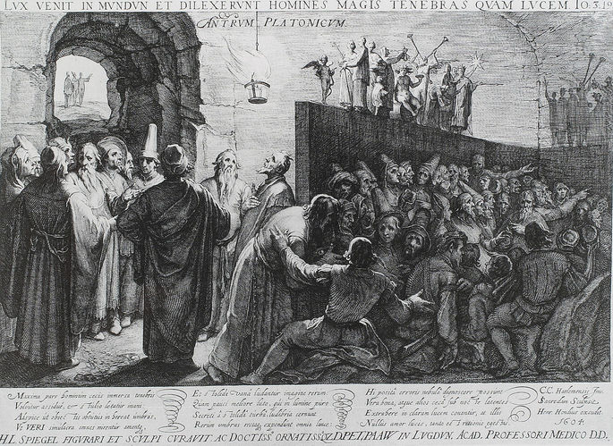

O mito da caverna de platão
Entenda o que o aprendiz de Sócrates queria dizer.
Mito da Caverna
O Mito da Caverna, também conhecido como Alegoria da Caverna, foi escrito por Platão, um dos mais importantes pensadores da história da Filosofia. Através do método dialético, esse mito revela a relação estabelecida pelos conceitos de escuridão e ignorância, luz e conhecimento. Foi escrito em forma de diálogo e pode ser lido no livro VII da obra A República.
Platão descreve que alguns homens, desde a infância, se encontram aprisionados em uma caverna. Nesse lugar, não conseguem se mover em virtude das correntes que os mantém imobilizados. Virados de costas para a entrada da caverna, veem apenas o seu fundo. Atrás deles há uma parede pequena, onde uma fogueira permanece acesa. Por ali passam homens transportando coisas, mas como a parede oculta o corpo dos homens, apenas as coisas que transportam são projetadas em sombras e vistas pelos prisioneiros.
Certo dia, um desses homens que estava acorrentado consegue escapar e é surpreendido com uma nova realidade. No entanto, a luz da fogueira, bem como a do exterior da caverna, agridem os seus olhos, já que ele nunca tinha visto a luz. Esse homem tem a opção de voltar para a caverna e manter-se como havia se acostumado ou, por outro lado, pode se esforçar por se habituar à nova realidade. Se esse homem quiser permanecer fora pode, ainda, voltar para libertar os companheiros dizendo o que havia descoberto no exterior da caverna. Provavelmente, eles não acreditariam no seu testemunho, já que a verdade era o que conseguiam perceber da sua vivência na caverna.
Interpretação do Mito da Caverna
Com o Mito da Caverna, Platão revela a importância da educação e da aquisição do conhecimento, sendo esse o instrumento que permite aos homens estar a par da verdade e estabelecer o pensamento crítico. O senso comum, que dispensa estudo e investigação, é representado pelas impressões aparentes vistas pelos homens através das sombras. O conhecimento científico, por sua vez, baseado em comprovações, é representado pela luz.
Assim, tal como o prisioneiro liberto, as pessoas também podem ser confrontadas com novas experiências que ofereçam mais discernimento. O fato de passar a entender coisas pode, no entanto, ser chocante e esse fato inibidor para que continuem a buscar conhecimento. Isso porque a sociedade tem a tendência de nos moldar para aquilo que ela quer de nós, que é aceitar somente o que nos oferece através da informação transmitida em meios de comunicação e não só. Desde a Antiguidade, Platão quer mostrar a importância da investigação para que sejam encontrados meios de combate ao sistema, o qual limita ações de mudança.
© Produzido por: Tainá Silva e Vithória Gomes, Inc